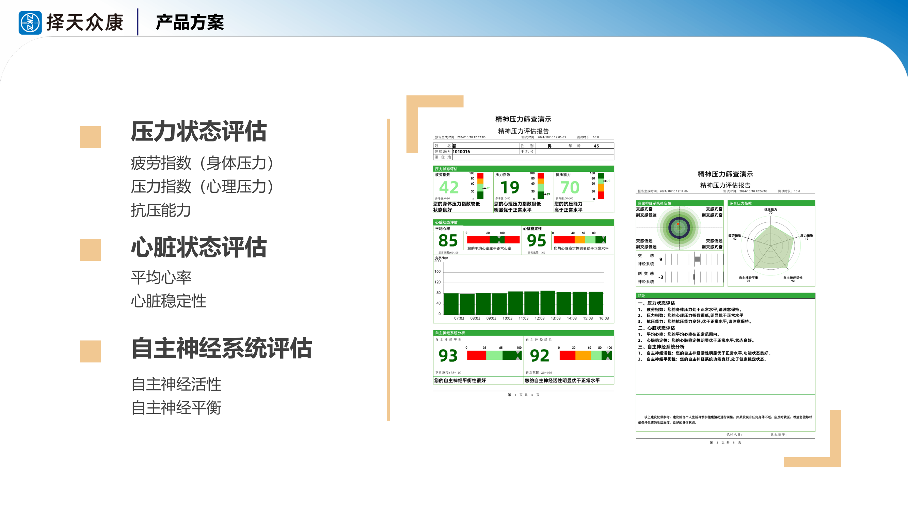
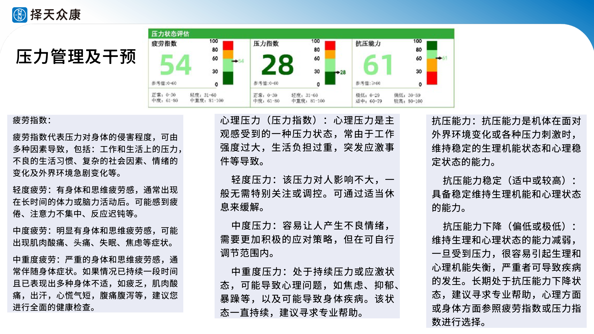
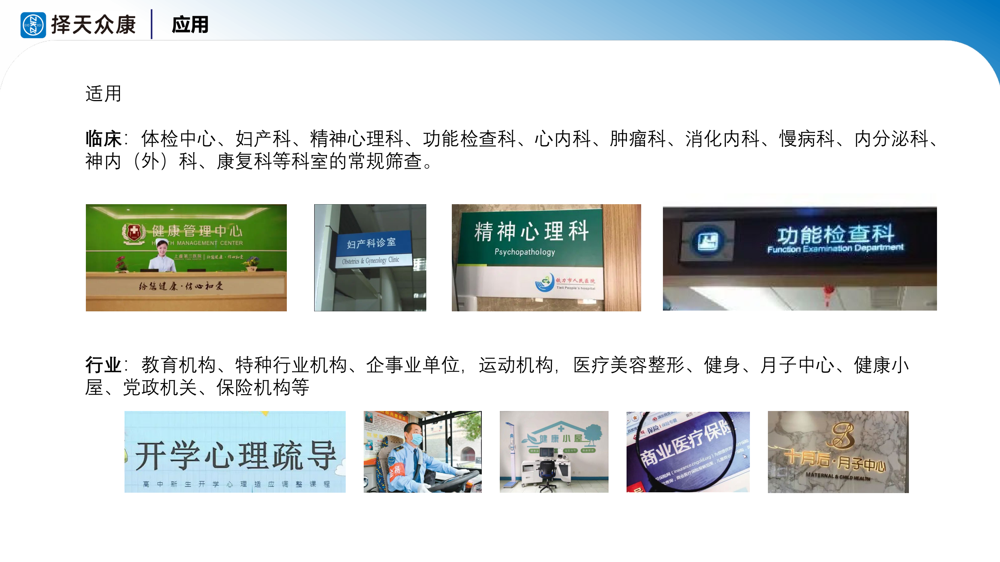
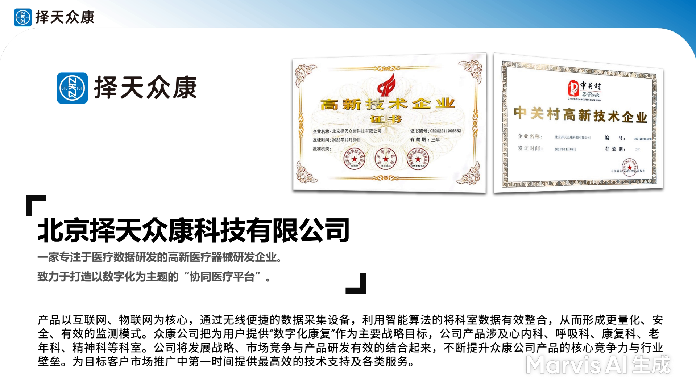
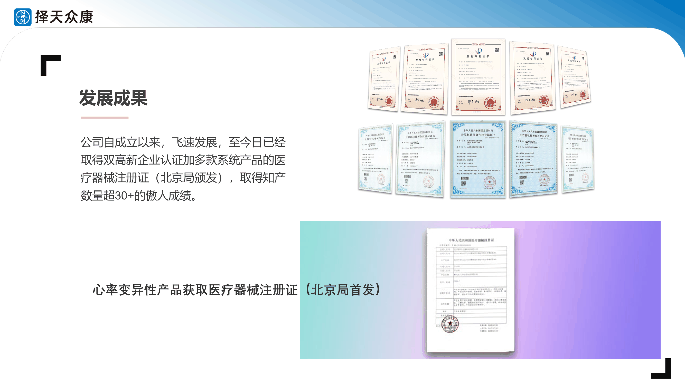

智心同检知识库
集成式精神压力管理系统「智心同检 ZTZK-C」完整培训资料，涵盖压力医学机制、HRV技术原理、产品方案、临床应用、政策市场等全维度核心知识。支持智能问答搜索。
🔎 智能问答搜索
📖 知识模块
🔬 压力医学机制
HPA轴、皮质醇、肾上腺疲劳三阶段、七大系统影响
HPA轴第一信使。下丘脑室旁核分泌刺激垂体前叶释放ACTH启动应激级联。
临床：CRH神经元过度活跃与焦虑症/抑郁症/PTSD核心症状直接相关。
HPA轴第二级信号。垂体前叶到肾上腺皮质促进皮质醇/醛固酮合成。
临床：ACTH兴奋试验评估肾上腺储备功能。
| 作用 | 效应 |
|---|---|
| 糖代谢 | 糖异生升血糖(战斗供能) |
| 抗炎 | 抑制IL-1/TNF-a |
| 免疫 | 抑制活性降低抵抗力 |
| 心血管 | 增强儿茶酚胺敏感性调血压 |
| 蛋白 | 促分解长期肌肉流失 |
昼夜节律：早6-8点峰值 午夜0-2点谷值。紊乱导致夜间不降睡眠差恶性循环。
内分泌等级次序：(1)生存级-肾上腺/胰腺 (2)生长级-甲状腺 (3)生殖级-卵巢/睾丸最先放弃
- DHEA青春激素下降 抗压能力下降
- 性激素下降 性欲下降 月经紊乱 不孕
- 孕酮被挪用 PMS加重
- 芳香化酶激活 雌激素优势上升
- 最终PMS/子宫肌瘤/内膜异位
| 属性 | 详情 |
|---|---|
| 来源 | 肾上腺网状带95%+卵巢睾丸5% |
| 峰值 | 25岁左右 |
| 年降 | 约2-3% |
功能：增强免疫/抗氧化/改善认知/增加骨密度/抗抑郁/提升肌力/改善皮肤。
| 系统 | 改变 | 后果 |
|---|---|---|
| 消化 | 肠脑轴紊乱菌群失衡肠漏内毒素入血 | IBS 营养吸收障碍 |
| 免疫 | 易感上升疫苗下降潜伏病毒激活 | 频繁感染 伤口延迟愈合 |
| 能量 | 氧化应激线粒体DNA损伤ATP下降 | 疲劳 认知下降 肌无力 |
| 肝脏 | 235+种解毒基因改变 | 解毒负荷剧增 |
| 内分泌 | TSH抑制甲状腺下降胰岛素抵抗上升 | PCOS 月经紊乱 不孕 |
| 心血管 | 儿茶酚胺上升血压上升频繁发怒 | 心衰+19% 房颤+16% 死亡+28% |
| 骨骼 | 皮质醇促骨吸收抑骨形成 | 骨质疏松 尤其绝经后 |
- 皮质醇定向堆积腹部向心性肥胖
- 胰岛素抵抗血糖波动渴望甜食高热量
- 情绪化进食暴饮暴食倾向
- 睡眠差瘦素下降饥饿素上升食欲失控
- TSH抑制甲状腺下降基础代谢降低
| 通路 | 机制 | 效果 |
|---|---|---|
| 皮质醇 | 促破骨抑成骨 | 骨吸收形成 |
| 性激素下降 | DHEA/雌激素/睾酮下降 | 失去保护 |
| 炎症因子 | IL-6 IL-1b TNF-a上升 | 加速吸收 |
| 代谢因素 | 胰岛素抵抗钙吸收下降 | 矿物质缺乏 |
| 微量元素 | 肾脏排镁上升血镁下降 | 矿化不足 |
- 免疫监视失效：NK细胞活性下降无法清除早期癌变
- 血管生成加速：VEGF上升为肿瘤提供丰富血供
- DNA修复受损：氧化应激致突变累积
- 炎症微环境：有利于癌细胞存活增殖
路径一：压力到高皮质醇到胰岛素抵抗到糖尿病
路径二：糖尿病并发症到心理负担到恶化血糖控制
HRV价值：HF成分最早且最明显降低可作为自主神经病变敏感早期筛查工具往往早于临床症状数年。
| 类型 | 特征 |
|---|---|
| 躯体型 | 不明原因疲劳/睡眠紊乱/慢性疼痛/消化不良/反复感冒 |
| 心理型 | 抑郁/焦虑/注意力下降/情绪不稳/兴趣减退/快感缺失 |
| 社交型 | 人际交往减退/效率下降/回避社交/孤独感 |
中国数据：10.3%健康 / 73.6%亚健康 / 16.1%心理问题
肠道拥有约5亿个神经元比脊髓还多称第二大脑。
- 压力导致交感激活胃肠血流减少
- 蠕动减慢有害菌增殖
- 紧密连接破坏导致肠漏Leaky Gut
- LPS内毒素入血全身炎症
- 最终：IBS/自免疫/关节痛/脑fog/疲劳
90%血清素5-HT在肠道合成肠道健康直接影响情绪。
健康：早晨6-8AM峰值 渐降 到午夜0-2AM谷值
紊乱三大原因：倒班/跨时区、蓝光暴露(手机)、慢性压力持续激活HPA轴。
以下表现如果出现3项及以上提示你可能存在慢性高皮质醇血症：
| # | 表现 | 机制关联 |
|---|---|---|
| 1 | 腹部脂肪堆积(向心性肥胖) | 皮质醇受体腹部密度最高 |
| 2 | 频繁感冒或感染 | 免疫抑制 |
| 3 | 情绪波动大/易怒/焦虑 | 神经递质失衡 |
| 4 | 食欲异常/渴望甜食 | 胰岛素抵抗/血糖波动 |
| 5 | 睡眠差/难入睡/早醒 | 节律紊乱 |
| 6 | 难以减重 | 代谢减慢 |
| 7 | 腹胀/排气增多 | 肠道菌群失衡 |
| 8 | 异常口渴 | 电解质失衡 |
| 9 | 下午精力明显下降 | 肾上腺功能不足 |
| 10 | 女性：月经紊乱 | 生殖激素被剽窃 |
| 类别 | 检测项目 | 临床意义 |
|---|---|---|
| 肾上腺 | 皮质醇(4点节律)+DHEA-S | 判断所处疲劳阶段 |
| 甲状腺 | TSH+T3+T4+反T3 | 排除甲减/甲亢/转换障碍 |
| 性激素 | 雌二醇/孕酮/睾酮/FSH/LH/SHBG | 生殖轴功能状态 |
| 糖代谢 | 空腹血糖+空腹胰岛素+HOMA-IR | 胰岛素抵抗程度 |
| 应激标记 | sIgA+铁蛋白+CRP | 慢性炎症和免疫状态 |
| 项目 | 详情 |
|---|---|
| 女性剂量 | 5-25mg 每日两次 |
| 男性剂量 | 10-50mg 每日两次 |
| 过量副作用(女) | 痤疮、多毛、声音变粗 |
| 过量副作用(男) | 易怒、攻击性行为增加 |
| 禁忌人群 | 激素敏感肿瘤史、孕妇、哺乳期、青春期前 |
| 监测频率 | 每6-8周复查激素水平 |
- 必须先做4点皮质醇节律检测确认确实存在缺乏
- 从极低剂量2.5-5mg起始
- 严格遵循昼夜节律给药(早晨较高剂量晚间较低)
- 每6-8周复查调整方案
- 疗程不超过3个月
- 不可突然停药必须逐渐减量
| 维度 | ECG心电图 | PPG光电容积脉搏波 |
|---|---|---|
| 原理 | 电极记录心脏电活动 | 光电传感器检测血流变化 |
| 精度 | 金标准最高 | 较高(略低于ECG) |
| 便捷性 | 需专业设备操作较复杂 | 便携易用可穿戴 |
| 成本 | 较高 | 较低 |
| 适用场景 | 临床诊断/科研 | 日常监测/筛查 |
| 干扰因素 | 电极接触不良/肌电干扰 | 运动伪差/温度变化 |
| 因素 | 危害 | 来源 |
|---|---|---|
| 频繁发怒 | 心衰+19% 房颤+16% 死亡+28% | 哈佛队列 |
| 慢性压力 | 颈动脉内膜增厚(粥样硬化标志) | 超声研究 |
| 急性应激 | 斑块破裂导致心梗脑梗 | 病理机制 |
| 交感兴奋 | 血压升高 左室肥厚 | 血流动力学 |
| 炎症因子 | CRP/IL-6升高 内皮损伤 | 生化指标 |
| 途径 | 机制 | 表现 |
|---|---|---|
| 易感性增加 | NK/T/B细胞被抑制 | 频繁感冒感染 |
| 疫苗反应降低 | 抗体滴度降低 | 疫苗保护效果差 |
| 潜伏病毒激活 | HSV/EBV/VZV复活 | 疱疹复发 口腔溃疡 |
| 伤口愈合延迟 | 炎症期延长 | 伤口愈合慢 |
- 氧化应激 - 压力导致自由基暴增超过抗氧化能力 导致mtDNA损伤 ATP减少
- 不可逆性 - mtDNA缺组蛋白保护更易受损 修复能力有限
- 后果链路 - ATP减少到疲劳到认知障碍到肌肉无力到运动耐力下降到活动量减少到恶性循环
| 层面 | 改变 | 后果 |
|---|---|---|
| 基因表达 | 235+种解毒基因改变 | 整体解毒能力变化 |
| I相酶(P450) | 活性改变 | 药物毒素代谢异常 |
| II相结合 | 葡萄糖醛酸化等受阻 | 中间产物堆积 |
| III相转运 | 毒素排出受阻 | 肠肝循环再吸收 |
- 套餐加项 - 基础套餐加精神压力评估
- 高端必备 - 中高端客户关注心理健康
- 团检增值 - 企业员工压力分析报告
- 异常随访 - 高风险个体建议专科就诊
- 年度对比 - 历年数据趋势观察
收费50-180元/人次 | 体检中心是最大潜在市场之一
| 场景 | 说明 |
|---|---|
| 初诊辅助 | 配合量表 提供客观数据维度 |
| 鉴别诊断 | 抑郁vs焦虑的HRV特征差异 |
| 疗效量化 | 前后HRV变化等于客观疗效证据 |
| 用药评估 | 监测精神药物对HRV的影响 |
| 复诊随访 | 定期监测追踪康复进程 |
| 科研数据 | 积累临床数据用于发表 |
精神科是最核心的应用科室
背景：肿瘤患者心理共病率67.1% | 焦虑54.3% | 抑郁71.1%
| 场景 | 说明 |
|---|---|
| 初诊基线 | 确诊时建立HRV基线 |
| 治疗监测 | 化疗放疗期间应激变化 |
| 癌因性疲乏 | 区分躯体vs心理疲劳 |
| 康复随访 | 治疗后长期追踪 |
| 安宁疗护 | 终末期心理评估 |
- 看整体 - 六个指标的总体分布是否在正常范围
- 关注异常 - 超出正常范围的指标重点分析
- 结合症状 - 客观数据与主观症状对照
- 看趋势 - 有历史数据则对比前后变化
- 综合判断 - 不凭单一指标下结论 需医生结合临床
报告上每项都有参考范围和简单解读 建议由培训过的医务人员详细解读
🛣 缓压与干预
适应原、营养补充、DHEA、荷尔蒙评估
| 方法 | 具体做法 | 效果 |
|---|---|---|
| 社会关系 | 保持良好人际连接定期社交 | 最强压力缓冲因素 |
| 自律生活 | 规律作息均衡饮食少熬夜 | 稳定生物钟降低基线压力 |
| 环境优化 | 减少噪音和视觉混乱 | 降低感官过载 |
| 有氧运动 | 每周3-5次每次30分钟以上 | 消耗多余皮质醇提升内啡肽 |
| 冥想/正念 | 每天10-20分钟专注呼吸 | 激活副交感神经降低HRV改善 |
| 优质睡眠 | 7-9小时固定时间入睡 | HGH分泌修复身体 |
| 抗炎饮食 | 全食物Omega-3蔬菜水果 | 减少全身炎症负荷 |
| 时间管理 | 设定边界学会拒绝 | 减少可控性压力源 |
| 营养素 | 推荐剂量 | 作用机制 |
|---|---|---|
| B族复合 | B5/B6/生物素/叶酸 | 支持肾上腺激素合成代谢 |
| 维生素C | 1-2g/日 | 肾上腺皮质醇合成必需大量VC |
| 镁 | 400-600mg/日 | 放松肌肉和神经系统改善睡眠 |
| Omega-3 | 1-3g/日 | 全身抗炎保护心血管和大脑 |
| 锌 | 20-50mg/日 | 免疫功能和激素合成辅助 |
❤️ HRV技术原理
时域/频域/非线性指标、自主神经评估
HRV = 逐次心跳间隔(R-R间期)的微小差异
- 正常范围：几十毫秒级别的自然波动
- 产生机制：自主神经系统对窦房结的调制
- 核心意义：HRV越高=自主神经调节能力越强=身体适应力越好
- 临床价值：HRV降低是多种疾病的早期预警信号
权威依据：1996年ESC/NASPE共识指南 + 1998年中华医学会建议
| 属性 | 详情 |
|---|---|
| 全称 | Standard Deviation of NN intervals |
| 含义 | 全部NN间期的标准差 |
| 反映 | 自主神经总调节能力(交感+副交感综合) |
| 正常值(5min) | 约50-100ms |
| 临床意义 | SDNN下降=自主神经功能受损 |
| 属性 | 详情 |
|---|---|
| 全称 | Root Mean Square of Successive Differences |
| 含义 | 相邻RR间期差值的均方根 |
| 反映 | 副交感神经(迷走神经)活性 |
| 优势 | 不受呼吸频率影响 比SDNN更稳定 |
| 正常值(5min) | 约20-50ms |
| 关联 | RMSSD下降=迷走神经功能减退=焦虑/抑郁/疲劳 |
RMSSD是评估恢复状态和训练负荷的首选指标。
| 属性 | 详情 |
|---|---|
| 全称 | percent of NN50 |
| 定义 | 相邻RR差值超过50ms的心搏占比(%) |
| 反映 | 迷走神经瞬时调节能力 |
| 正常值(5min) | 约1-20% |
| 特点 | 对快速变化敏感 与RMSSD高度相关 |
| 属性 | 详情 |
|---|---|
| 全称 | Total Power |
| 频率范围 | 0-0.4 Hz |
| 含义 | 所有频率成分功率之和 |
| 反映 | 自主神经总体调节能力 |
| 趋势 | 随年龄增长而下降 |
TP是基础指标 LF/HF/VLF都是其组成部分。
| 属性 | 详情 |
|---|---|
| 频段 | 0.0033 - 0.04 Hz |
| 可能机制 | 体温调节/血管舒缩/肾素-血管紧张素/内皮功能 |
| 临床关联 | 心衰/炎症/脓毒症等 |
| 重要性 | 24小时分析中占比大 有重要临床价值 |
| 属性 | 详情 |
|---|---|
| 频段 | 0.04 - 0.15 Hz |
| 传统解读 | 交感神经活性 |
| 现代理解 | 交感+副交感双重调制(副交感成分可能更大) |
| 生理基础 | 压力感受器反射(baroreflex) |
| 衍生指标 | LFnu = LF/(TP-VLF)*100 归一化处理 |
| 属性 | 详情 |
|---|---|
| 频段 | 0.15 - 0.4 Hz |
| 调控 | 主要由副交感神经(迷走神经) |
| 同步 | 与呼吸频率同步(RSA呼吸性窦性心律不齐) |
| 地位 | 副交感神经活性的最可靠频域指标 |
| HF下降 | = 迷走神经功能减退 = 焦虑/抑郁/糖尿病/心衰 |
| 比值 | 传统解读 | 可能状态 |
|---|---|---|
| LF/HF偏高(>3) | 交感优势 | 紧张/应激/焦虑/高血压前期 |
| LF/HF正常(1-3) | 相对平衡 | 健康静息状态 |
| LF/HF偏低(<1) | 副交感优势 | 深度放松/过度抑制/某些药物影响 |
| 指标 | 原理 | 价值 |
|---|---|---|
| 庞加莱图 | 散点图可视化RR间期关系 | 直观展示变异性模式 |
| SD1/SD2 | 散点图长短轴参数 | SD1=短期变异 SD2=长期变异 |
| 近似熵ApEn | 信号规则性度量 | 越低=越规律=适应性下降 |
| 样本熵SampEn | 改进版ApEn更稳定 | 早期疾病检测敏感 |
| DFA | 去趋势波动分析 | 长程相关性评估 |
| HRV改变 | 机制 | 临床意义 |
|---|---|---|
| SDNN下降 | 自主神经总活性降低 | 整体调节能力减弱 |
| HF显著下降 | 迷走神经功能受损 | 失去心血管保护 |
| LF/HF升高 | 交感神经优势 | 外周阻力增加血压升高 |
| 非线性指标降 | 信号复杂性降低 | 适应能力下降 |
冠心病和心梗患者HRV明显降低 且是预后的独立预测因子
- 心梗后SDNN低于70ms → 死亡风险显著增加
- 机制：心脏自主神经重构 → 交感过度兴奋+迷走神经张力↓ → 室性心律失常风险↑
- HRV已纳入多项指南作为心梗后风险评估工具
| HRV改变 | 与NYHA分级关系 |
|---|---|
| 所有时域指标下降 | 分级越重数值越低 |
| 频谱向VLF偏移 | LF和HF均降低 |
| 非线性复杂性降低 | 信号趋于规律化 |
机制：心衰→结构功能改变→自主神经调控异常+神经激素过度激活→HRV恶化→形成恶性循环
- HF成分最早且最明显降低——迷走神经先受损(这是标志性改变)
- 随后SDNN/RMSSD也开始下降
- 静息心率逐渐加快(迷走神经脱逸现象)
- LF/HF比值变化不确定
建议：糖尿病患者每年至少一次HRV筛查作为自主神经病变的早期预警。
| 障碍类型 | HRV特征 | 机制 |
|---|---|---|
| 抑郁症 | SDNN/RMSSD/HF均降低 LF/HF变化不一(异质性大) | 迷走神经功能减退 自主神经灵活性下降 |
| 焦虑症 | HF显著降低 LF/HF通常升高 | 交感神经持续兴奋 副交感被抑制 |
| PTSD | HRV全面降低 夜间恢复期受损严重 | 自主神经僵化 无法从应激中恢复 |
| 指标 | 正常范围 | 备注 |
|---|---|---|
| SDNN | 50-100 ms | 随年龄下降 |
| RMSSD | 20-50 ms | 女性略高于男性 |
| pNN50 | 1-20 % | 与RMSSD相关 |
| LF/HF | 1-3 | 个体差异大 |
重要：个体自身基线比绝对值更重要！追踪个人变化趋势比单次测量更有价值。
HRV领域的奠基性文件
- 发布：1996年 ESC + NASPE联合发布
- 地位：国际公认的HRV标准化规范
- 内容：统一测量方法/定义指标体系/建立正常值/明确临床场景
- 中文版：1998年中华医学会发布建议
| 项目 | 详情 |
|---|---|
| 合作机构1 | 北京大学第六医院(国家精神医学中心) |
| 合作机构2 | 北京回龙观医院(精神专科三甲) |
| 数据规模 | 近十年 十几万临床数据 |
| SCI论文 | AFFECTIVE DISORDERS IF=4.9 |
| 注册证 | 北京市药监局医疗器械注册证 |
| 企业资质 | 国家级+中关村双高新认证 30+知识产权 |
| 疾病 | HRV改变 | 机制 |
|---|---|---|
| 睡眠呼吸暂停(OSA) | HRV紊乱 夜间变异增大 | 间歇性缺氧反复唤醒 |
| 新冠重症(COVID-19) | HRV显著降低 | 全身炎症+自主神经损伤 |
| 慢阻肺(COPD) | HRV降低 | 通气功能障碍 |
| 慢性肾病(CKD) | HRV进行性降低 | 尿毒症毒素累积 |
| 帕金森(PD) | HRV降低 | 自主神经功能障碍 |
| 阿尔茨海默(AD) | HRV降低 | 中枢自主神经调控障碍 |
| 分数段 | 等级 | 解读 | 建议 |
|---|---|---|---|
| 0-25 | 轻度 | 基本能应对 | 保持良好习惯 |
| 25-50 | 中度 | 明显压力反应 | 注意休息调节 |
| 50-65 | 中重度 | 较大损害 | 积极干预 |
| 65+ | 重度 | 高度应激 | 立即关注 |
基于HRV时域+频域多项参数综合计算。
| 属性 | 说明 |
|---|---|
| 定义 | 面对逆境积极适应并维持心理健康的能力 |
| 核心 | 不是不受影响 而是受击后能恢复 |
| 与HRV关系 | 正相关 HRV越高=韧性越强 |
| 智心同检关联 | 抗压能力指标间接反映韧性水平 |
提升方法
- 建立强大的社会支持系统
- 培养成长型思维(从失败中学习)
- 规律有氧运动
- 正念冥想练习
- 保持充足睡眠
| 方法 | 机制 | HRV改善 |
|---|---|---|
| CBT-I认知行为疗法 | 纠正不良睡眠认知和行为 | SDNN↑ RMSSD↑ HF↑ |
| taVNS耳迷走神经刺激 | 调节自主神经平衡 | HF↑ LF↓ LF/HF↓ |
| HRV-BF生物反馈 | 直接训练自主神经调控 | 全面HRV指标↑ |
| 香薰治疗 | 激活副交感神经放松 | 夜间HRV↑ |
| 时间 | 注意事项 |
|---|---|
| 前一晚 | 充足睡眠7-9小时 |
| 前24h | 避免剧烈运动/饮酒/过量咖啡因 |
| 前2h | 不要饱餐 空腹或少量进食 |
| 检测前 | 排空膀胱 宽松衣物 |
| 特殊 | 女性避开月经期 记录正在服用的药物 |
- 早期预警 - 症状出现前数月发现异常
- 健康追踪 - 建立个人基线 了解趋势
- 训练优化 - 运动员调整训练负荷
- 压力管理 - 量化压力 评估干预效果
- 疾病管理 - 追踪病情进展和疗效
建议：每周至少1-2次 建立个人趋势数据
| 方法 | 做法 | 效果 |
|---|---|---|
| 有氧运动 | 150min/周中等强度 | SDNN上升 HF上升 |
| 规律睡眠 | 固定时间7-9小时 | 夜间HRV上升 |
| 冥想正念 | 10-20min/天 | 副交感上升 |
| 深呼吸 | 4-7-8法或箱式呼吸 | 即时HF上升 |
| 冷暴露 | 冷水浴30-60秒 | 短期激活副交感 |
| 社交连接 | 保持良好人际 | 长期HRV上升 |
| 抗炎饮食 | Omega-3蔬果全谷物 | 降低炎症负荷 |
| 减重 | BMI至正常范围 | 肥胖者显著改善 |
| 维度 | 智心同检 | 手环手表 |
|---|---|---|
| 精度 | 医疗级 符合器械标准 | 消费级 参考性质 |
| 算法 | 国际指南+临床大数据 | 通用算法 未经验证 |
| 报告 | 六维综合评估 | 单一HRV数值 |
| 循证 | SCI论文发表 | 无临床研究 |
| 用途 | 医疗诊断辅助 | 娱乐趋势参考 |
| 合规 | 医疗器械注册证 | 非医疗器械 |
| 场景 | 说明 |
|---|---|
| 孕期心理筛查 | 孕激素剧变 HRV客观评估情绪 |
| 产后抑郁预防 | 产后42天复查同步HRV |
| 高危妊娠管理 | 妊高症/妊娠糖尿病 自主神经监测 |
| 产科常规 | 妇产科为推荐科室之一 |
检测完全无创安全 但需结合孕周生理性变化解读
| 特征 | 详情 |
|---|---|
| 总体趋势 | 随年龄增长HRV逐渐下降(正常衰老) |
| SDNN年降 | 约1-2%每年 |
| 副交感下降 | 比交感更明显 HF下降显著 |
| 夜间恢复 | 恢复能力减弱 |
| 应激适应 | 对压力适应能力下降 |
注意：下降过快可能存在病理状态 需结合年龄校正正常值解读
- 儿童期：HRV相对较高(良好自主神经弹性)
- 青春期：向成人模式转变 可能暂时性波动
- 高压学生群体：HRV普遍低于同龄人
- 焦虑抑郁倾向：HF成分明显降低
学校应用：批量筛查 + 一生一策档案 + 趋势跟踪
| 应用 | 说明 |
|---|---|
| 过度训练监测 | 晨起HRV突降等于恢复不足 需减量 |
| 最佳状态识别 | HRV高位区间等于比赛表现好 |
| 训练负荷调整 | 根据每日HRV动态调整强度 |
| 恢复策略评估 | 比较不同恢复方式的效果 |
| 运动员选材 | 先天HRV高等于更好心肺潜力 |
职业体育团队已广泛采用HRV作为训练管理工具
| 要素 | 说明 |
|---|---|
| 原理 | 实时显示HRV 学习自主调节 |
| 核心方法 | 节律性呼吸(6次/分) RSA最大化 |
| 辅助方法 | 渐进式放松 / 正念整合 |
| 疗程 | 8-12周 2-3次/周 20-30min/次 |
| 适应症 | 焦虑/抑郁/失眠/疼痛/高血压 |
| 属性 | 详情 |
|---|---|
| 刺激部位 | 耳甲(耳蜗区域) |
| 作用通路 | 耳部到迷走神经到脑干孤束核到自主神经中枢 |
| 效果 | 副交感上升 交感下降 LF/HF下降 |
| 优势 | 非侵入性 操作简便 副作用少 |
| 适应症 | 焦虑/抑郁/失眠/癫痫/疼痛 |
| 模块 | 内容 |
|---|---|
| 睡眠限制 | 缩短卧床时间 提高睡眠效率 |
| 刺激控制 | 床只用于睡觉 不睡不上床 |
| 认知重构 | 纠正关于睡眠的错误信念 |
| 放松训练 | 渐进式肌肉放松或呼吸练习 |
疗程4-8周 | HRV改善：SDNN/RMSSD/HF均升高 | 长期优于安眠药无依赖
| 应用 | 说明 |
|---|---|
| 风险分层 | HRV低等于事件风险高 加强管理 |
| 高血压评估 | 是否合并自主神经紊乱 |
| 心梗后风险 | SDNN低于70ms重点关注 |
| 神经官能症 | 排除器质性病变 |
| 心律失常风险 | 自主神经失衡等于诱因 |
| 双心医学 | 心脏病加心理问题同步评估 |
⚙️ 产品方案配置
ZT10+/ZT20+配置、使用流程、六维报告
| 序号 | 配置项 | 数量 |
|---|---|---|
| 1 | 系统软件 | 1套 |
| 2 | 电脑 | 1台 |
| 3 | 身份证阅读器 | 1台 |
| 4 | 扫码器 | 1个 |
| 5 | 打印机 | 1台 |
| 6 | 移动台车 | 1辆 |
| 7 | 10通道设备充电仓 | 1套 |
可同时检测最多10人。适合中小型机构。
基于ZT10+全部配置 + 扩容：
| 额外配置 | 数量 |
|---|---|
| 20通道设备充电仓 | 2套(共20通道) |
总检测能力：同时20人
适用场景：大型体检中心、企业团检、学校批量筛查等高通量场景。
- 患者建档 - 身份证读取或手动录入基本信息
- 设备佩戴 - 将检测设备佩戴于受检者(支持多人同时)
- 等待采集 - 静坐休息约10分钟 数据自动采集
- 设备归还 - 取下设备 消毒后可循环使用
- 数据导入 - WiFi无线传输至系统软件
- 数据分析 - 软件自动分析生成报告
- 报告打印 - 打印六维评估报告
| 分数段 | 等级 | 表现 |
|---|---|---|
| 0-33 | 轻度 | 心理压力小 情绪稳定 |
| 33-66 | 中度 | 一定压力 可能焦虑烦躁 |
| 66-100 | 中重度 | 压力大 需关注心理健康 |
侧重心理层面评估 与疲劳指数(身体层面)互补。
| 分数段 | 等级 | 含义 |
|---|---|---|
| 80-100 | 稳定 | 强 能较好应对各种压力 |
| 60-80 | 轻微下降 | 有所减弱 需注意 |
| 40-60 | 偏低 | 明显下降 易受影响 |
| 30-40 | 极低 | 很弱 需重点支持 |
抗压能力强 = 即使压力大也能较快恢复。是健康管理的重要风向标。
| 指标 | 范围 | 高=好/平衡 | 低=异常 |
|---|---|---|---|
| 自主神经活性 | 35-100 | 调节能力强 | 整体功能减弱 |
| 自主神经平衡 | 30-100 | 交感副交感均衡 | 失衡(偏高=交感优势 偏低=过度抑制) |
两指标结合全面评估自主神经功能。
- 客观量化 - 融入临床路径 数据可量化 非主观判定
- 评估规范 - 基于ESC/NASPE国际指南 共识+循证
- 技术成熟 - 时域+频域+非线性 三大类全覆盖
- 医疗合规 - 符合国家规范 有医疗器械注册证
- 评估精准 - 基于精神专科 十几万临床大数据
- 多通道 - 全流程数据化 最高同时20人并行
| 组件 | 功能 | 特点 |
|---|---|---|
| 母机(主机) | 软件/电脑/打印/管理 | 固定在移动台车上 |
| 子机(检测设备) | 佩戴式HRV采集 | 轻便舒适 可随身携带 |
| 连接方式 | WiFi无线传输 | 数据自动同步 |
设计理念：像航母(母机)和舰载机(子机)的关系。
优势：安装便捷 / 检测更舒适 / 团体效率高
- 首创母子机设计 - 安装便捷 检测舒适
- 国际指南算法 - 时域+频域+非线性
- 多通道信号采集 - 双通道同时采集
- 无线WiFi传输 - 减少干扰 提高效率
- 生理心理双数据 - 主客观结合
- 团体检测模式 - 一拖五并列式
- 数据加密管理 - 效率+安全兼顾
| 时间点 | 注意事项 |
|---|---|
| 检测前24h | 避免剧烈运动、饮酒、过量咖啡因 |
| 检测前2h | 避免饱餐 建议空腹或餐后2小时 |
| 检测环境中 | 安静放松 避免交谈和噪音 |
| 设备佩戴 | 确保接触良好 按指导正确佩戴 |
| 检测过程中 | 保持静坐 不要大幅度动作 |
| 检测时长 | 约10分钟 请耐心等待 |
| 特殊人群 | 心脏起搏器等植入设备需提前告知 |
| 部件 | 要点 | 频率 |
|---|---|---|
| 充电仓 | 清洁充电触点 | 每周 |
| 子机设备 | 酒精消毒后晾干 | 每次使用后 |
| 软件 | 检查版本更新 | 每月 |
| 电脑 | 清理磁盘空间 | 每月 |
| 打印机 | 检查墨盒纸张 | 按需 |
| 台车 | 轮子刹车检查 | 每月 |
| WiFi | 确保网络通畅 | 每日 |
| 校准 | 按厂家要求定期校准 | 按规定 |
| 步骤 | 耗时 |
|---|---|
| 建档 | 约1分钟 |
| 佩戴设备 | 约1分钟 |
| 数据采集 | 约10分钟 |
| 归还消毒 | 约1分钟 |
| 分析生成 | 约1分钟(自动) |
| 打印报告 | 约1分钟 |
单人约15分钟 | 20人并行一批约25分钟
| 人群 | 用途 |
|---|---|
| 健康人群 | 体检筛查 建立基线 |
| 亚健康人群 | 评估压力 指导干预 |
| 慢病患者 | 共病心理评估 |
| 精神心理科患者 | 诊断辅助 疗效追踪 |
| 孕产妇 | 孕期产后心理监测 |
| 学生 | 心理健康普查 |
| 企业员工 | EAP健康管理 |
| 运动员/高压职业 | 状态监控 |
| 老年人 | 自主神经功能评估 |
| 康复期患者 | 康复进程追踪 |
| 维度 | 说明 |
|---|---|
| 采集技术 | 医疗级专业传感器 |
| 算法基础 | ESC/NASPE 1996国际共识 |
| 数据验证 | 十几万临床大数据 |
| 学术发表 | SCI期刊IF=4.9 |
| 监管审批 | 北京市药监局注册证 |
🏥 临床应用解读
三大方向、指标解读、心理韧性
| 科室 | 主要用途 |
|---|---|
| 体检中心 | 健康筛查 常规项目 |
| 妇产科 | 孕产妇/更年期女性心理评估 |
| 精神心理科 | 核心应用科室 |
| 功能检查科 | 专项检查 |
| 心内科 | 心血管风险分层 |
| 肿瘤科 | 肿瘤患者心理共病评估 |
| 消化内科 | 肠脑轴相关评估 |
| 慢病科 | 慢病共病心理评估 |
| 内分泌科 | 代谢相关评估 |
| 神内(外)科 | 神经系统评估 |
| 康复科 | 康复进程监测 |
| 行业 | 典型场景 |
|---|---|
| 教育机构 | 学生心理健康测评 一生一策档案 |
| 特种行业 | 飞行员/司机/高压职业筛查 |
| 企事业单位 | 员工健康管理 EAP项目 |
| 运动机构 | 运动员状态监控 过度训练预警 |
| 医疗美容 | 术前术后心理评估 |
| 健身行业 | 会员健康基线评估 |
| 月子中心 | 产后妈妈心理状态跟踪 |
| 健康小屋 | 社区健康便民服务 |
| 党政机关 | 公务员队伍健康管理 |
| 保险机构 | 核保评估/健康管理服务 |
| 慢病类型 | 智心同检价值 |
|---|---|
| 糖尿病 | 自主神经病变早期筛查(提前数年) |
| 高血压 | 交感兴奋评估 指导降压方案 |
| 冠心病 | 心梗后风险分层 |
| 甲状腺/乳腺/子宫肌瘤 | 58-65%心理共病 需同步关注 |
| 肥胖症 | 压力型肥胖鉴别 |
| 失眠 | 自主神经全面评估 |
慢病管理中心是重要目标客户
以下为常先生压力评估报告示例，展示HRV检测结果与压力评估报告模板：



📊 政策与市场数据
110万+样本、慢病关联、政策体系
| 状态 | 占比 | 人数估算(以110万计) |
|---|---|---|
| 心理健康 | 10.3% | 约11万人 |
| 心理亚健康 | 73.6% | 约81万人 |
| 心理问题 | 16.1% | 约18万人 |
核心启示：近90%的人需要某种形式的心理健康关注或干预。
| 指标 | 数据 |
|---|---|
| 终生患病率(全障碍) | 6.8%(约1/15人) |
| 抑郁症患病率 | 3.4% |
| 患者总数 | 约9500万 |
| 年自杀人数 | 约28万(40%患抑郁症) |
| 就诊率 | 仅9.5% |
| 未治疗比例 | 92%从未接受治疗 |
发病年龄分布(低龄化趋势)
18岁以下:30.28% | 18-24岁:35.32% → 年轻人占比超65%!
| 指标 | 数据 |
|---|---|
| 全球患者总数 | 近10亿(1/8人口) |
| 1990-2019增长 | +48.1% |
| 新冠后抑郁症新增 | +5300万(+27.6%) |
| 新冠后焦虑症新增 | +6200万(+20.8%) |
| 指标 | 数据 |
|---|---|
| 焦虑症状阳性检出率 | 44.6% |
| 抑郁症状阳性检出率 | 53.5% |
| 全球新增抑郁症 | 5300万(+27.6%) |
| 全球新增焦虑障碍 | 6200万(+20.8%) |
多重压力叠加：社会隔离 + 经济不确定性 + 健康恐惧 = 前所未有的心理危机
| 时间 | 事件 | 意义 |
|---|---|---|
| 2015 | 十三五规划首次提出 | 国家层面首次纳入 |
| 2017 | 十九大报告+22部门指导意见 | 顶层设计明确 |
| 2018 | 十部委试点方案启动 | 落地执行开始 |
| 2021 | 全国试点全面铺开 | 咨询室80%+辅导室100% |
| 2024 | 二十届三中全会再次强调 | 持续深化推进 |
| 慢病类型 | 心理问题/亚健康 | 焦虑 | 抑郁 |
|---|---|---|---|
| 甲状腺结节 | 58.2%亚健康 | 43.1% | 41.2% |
| 乳腺良性病变 | 59.4%亚健康 | 57.8% | 55.0% |
| 子宫肌瘤 | 64.7%亚健康 | 40.3% | 58.5% |
| 肥胖 | 60.1%亚健康 | 32.8% | 44.3% |
| 失眠 | 54.7%亚健康 | 60.4% | 71.9% |
| 肿瘤 | 67.1%心理问题 | 54.3% | 71.1% |
| 脑梗 | 62.1% | 39.1% | 55.3% |
| 心梗 | 59.7% | 52.0% | 52.9% |
| 糖尿病 | 46.3% | 38.9% | 48.7% |
| 高血压 | 54.3%亚健康 | 43.2% | 47.8% |
| 冠心病 | 52.3%亚健康 | 46.0% | 54.6% |
| 学段 | 抑郁/焦虑检出率 |
|---|---|
| 小学生 | 抑郁约10% |
| 初中生 | 抑郁约30% |
| 高中生 | 抑郁约40% |
| 大学生 | 轻度焦虑38.26% 重度抑郁4.94% |
| 研究生 | 焦虑/抑郁上升趋势 总体恶化 |
政策要求：每学年至少一次测评 + 一生一策档案
- 焦虑抑郁情绪
- → 降低动机和积极性
- → 影响身体健康
- → 降低工作质量
- → 降低工作效率
- → 导致员工流失
- → 影响团队协作
- → 抑制创造力
- → 造成不良事件/安全事故
| 政策文件 | 核心要求 |
|---|---|
| 安全生产法(2021修订) | 关注从业人员身体和心理状况 |
| 国卫办2024-32号 | 推进职业健康保护行动 |
| GB/T45003-2024 | 心理健康安全管理指南(国标) |
| T/WSJD13-2020 | 职业人群心理健康促进指南(行标) |
| 指标 | 数据 | 对比 |
|---|---|---|
| 精神科医生 | 约4万名 | WHO推荐10名/10万人(仅3名) |
| 未治疗比例 | 92% | 绝大多数从未就医 |
| 抑郁症就诊率 | 9.5% | 90%以上未就诊 |
| 病耻感 | 56%+降低社交 | 歧视问题严重 |
| 职场歧视 | 30%+不公待遇 | 就业权益受损 |
⚙ 设备操作指南
短程心率压力检测设备使用说明与操作规范


🏢 公司简介与资质研发背景
北京择天众康科技有限公司 | 智心同检 & 智探心域产品线
北京择天众康科技有限公司是一家专注于医疗数据研发的高新医疗器械研发企业。致力于打造以数字化为主题的"协同医疗平台"。
产品以互联网、物联网为核心，通过无线便捷的数据采集设备，利用智能算法将科室数据有效整合，从而形成更量化、安全、有效的监测模式。公司把为用户提供"数字化康复"作为主要战略目标，产品涉及心内科、呼吸科、康复科、老年科、精神科等科室。
公司自成立以来，飞速发展，至今已取得双高新企业认证（国家级高新技术企业 + 中关村高新技术企业），加多款系统产品的医疗器械注册证（北京局颁发），取得知识产权数量超30+的傲人成绩。
- 心率变异性产品获取医疗器械注册证（北京局首发）
- 高新技术企业证书编号：GR202211006552（2022年12月30日，有效期三年）
- 中关村高新技术企业（2021年11月08日）
公司拥有完整的产品体系，分为三大系统：
心肺诊疗系统：六分钟步行监测评估系统（标准版/专业版）、肺功能分析系统、集成式生理参数管理系统（集成版）
运动康复系统：床旁运动监测评估系统（标准版/专业版）
精神·压力评估系统：集成式精神压力管理系统（智心同检）、集成式心率变异性评估系统、精神压力筛查模块、精神专科评估模块
智心同检（初筛利器）：多模式智能化、多终端同步、快速准确、全程无创、多维评估、航母式多模态，可对确诊患者进行长期跟踪。
智探心域（深度复诊）：24小时昼夜节律、多维度用药评估、动态便携，可对初筛异常患者进行专业、深度复诊。

